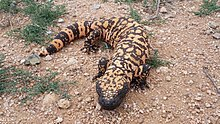
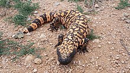

I used to own a parakeet and want another bird


I personaly own two dogs one is a chihuahua beagle mix the other is a aussie and we think hound dog mix


I used to own two Cats then one died now I have one


I own a russian tortoise he doesnt do much but we have had to give im many houses in his tank because he keeps growing

I owned a bearded dragon lizard years ago
 
